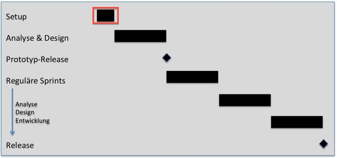

Während der Projektinitialisierung werden die grundlegenden Weichen für das Projekt gestellt:
-
Das Projektteam wird zusammengestellt. Dabei gehören zu dem Team nicht nur diejenigen, die Analyse- Design oder Entwicklungsaufgaben
übernehmen, sondern jeder, der im Analyseprozess Anforderungen stellen oder bewerten darf. Dieser Punkt ist wichtig, da die gesamte
Kommunikation bzgl. der Anforderungen innerhalb des Systems gehalten werden soll.
-
Die Konfiguration des Szenarios wird vorgenommen. Damit werden bereits wichtige Entscheidungen bzgl. der Struktur der Szenariovision,
des logischen und physikalischen Datenmodells getroffen.
-
In einer knappen Szenariovision werden die wesentlichen Ziele und Rahmenbedingungen dokumentiert.